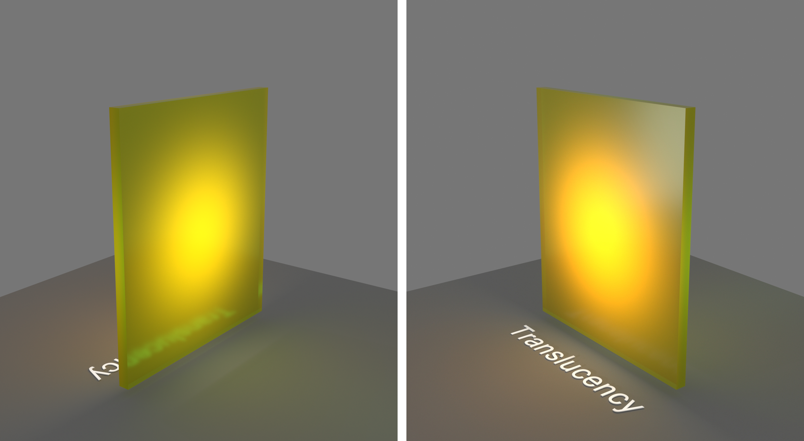
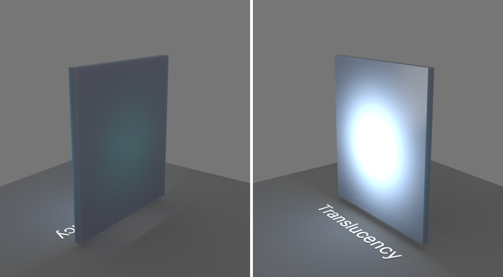
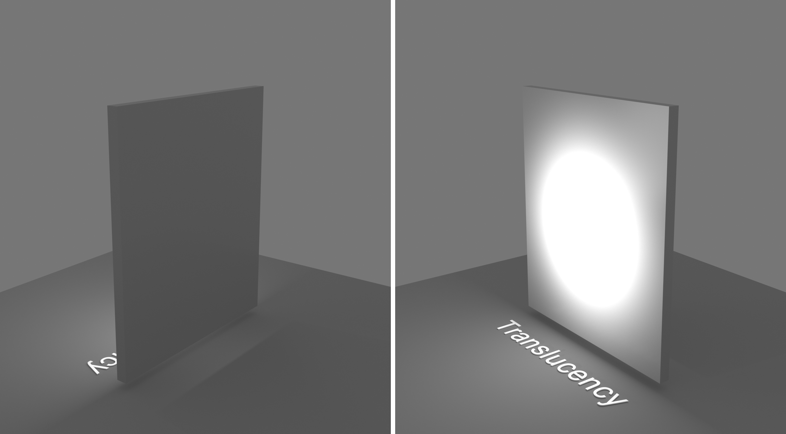
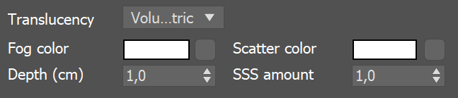

VRayMtl
This page provides information on the V-Ray Material.
Overview
VRayMtl is a very versatile material that allows for better physically correct illumination (energy distribution) in the scene, faster rendering, and more convenient reflection and refraction parameters. This material can be easily set up to simulate a huge variety of surfaces from plastics to metals to glass and more by adjusting a handful of parameters.
Furthermore, with the VRayMtl you can apply different texture maps, control the reflections and refractions, add bump and displacement maps, force direct GI calculations, and choose the BRDF for how light interacts with the surface material.
UI Path: ||Material Editor window|| > Material/Map Browser...
||Material Editor window|| > Material/Map Browser > Materials > V-Ray > VRayMtl
||V-Ray Toolbar|| > V-Ray Material button
Basic Parameters
Diffuse – Specifies the diffuse color of the material. Note the actual diffuse color of the surface also depends on the Reflect and Refract colors. This parameter can be mapped with a texture in the Maps rollout. See the Energy preservation parameter below.
Roughness – Used to simulate rough surfaces or surfaces covered with dust (for example, skin, or the surface of the moon). This parameter can be mapped with a texture in the Maps rollout. For more information, see the Roughness Parameter below. This parameter is not available when the renderer is set to GPU.
Preset – A drop-down menu with
preset values for commonly used materials. See the VRayMtl Presets page for more information.
Pr
esets use settings that work well (in terms of speed and realism) as a starting point or for general-use cases. However, when a custom scene requires it, the material parameters values can be further edited to work best. For example, Glass and Glass (Tinted) use glossiness values that speed up rendering, but
rendering a close-up view of a realistic glass object may require further adjustments
. For an in-depth approach refer to the How-To tutorials
.
Non-realistic material presets, such as Chocolate, Plastic, Ceramic, and Rubber are ‘quick’ compared to their realistic (SSS-enabled) counterparts. They can be used for generic plastic for the plastic backs of computer monitors or laptops in a meeting room, or for the car tires in a scene where the cars are somewhere in the distance, etc.
Bump map – Controls the Bump texture used for the material.
Example: Roughness
This example demonstrates the effect of the Roughness parameter. Note how, as the Roughness increases, the material appears more "flat" and dusty.
Roughness = 0.0
Roughness = 0.1
Roughness = 0.2
Roughness = 0.3
Roughness = 0.4

Roughness = 0.5
Roughness = 0.6
Roughness = 0.7
Roughness = 0.8
Roughness = 0.9
Roughness = 1.0
0.01.0
Reflection
Reflect – Specifies the amount of reflection and the reflection color. Note that the reflection color dims the diffuse surface color based on the Energy preservation mode option. This parameter can be mapped with a texture in the Maps rollout. For more information, see the Reflection Color example below.
Glossiness – Reflection glossiness. Controls the sharpness of reflections. A value of 1.0 means perfect mirror-like reflection; lower values produce blurry or glossy reflections. For more information, see the Reflection Glossiness example below. If BRDF is set to Use roughness, this option becomes Reflection roughness. See V-Ray Roughness for more information.
Fresnel reflections – When enabled, the reflection strength becomes dependent on the viewing angle of the surface. Some materials in nature (glass, etc.) reflect light in this manner. Note that the Fresnel effect depends on the index of refraction as well.
Fresnel IOR – Specifies the IOR to use when calculating Fresnel reflections. Normally this is locked to the Refraction IOR parameter, but it can be unlocked for finer control. This parameter can be mapped with a texture in the Maps rollout. For more information, see the Fresnel Option example below.
Metalness – Controls the reflection model of the material from dielectric (metalness 0.0) to metallic (metalness 1.0). Note that intermediate values between 0.0 and 1.0 do not correspond to any physical material. This parameter can be used with PBR setups coming from other applications. The reflection color should typically be set to white for real world materials. For more information, see Understanding Metalness blog post. For a list of metal shaders' IOR, see the Metal Shaders IOR page.
Max depth – Specifies the number of times a ray can be reflected. Scenes with lots of reflective and refractive surfaces may require higher values to look right. For more information, see the Reflection Depth example below.
Reflect on back side – When enabled, reflections are computed for back-facing surfaces too. Note that this affects total internal reflections too (when refractions are computed).
Dim distance – Specifies the distance after which the reflection rays are not traced.
Dim fall off – Specifies the fall off radius for the dim distance.
Affect channels – Allows you to specify which channels are affected by the reflection of the material.
Color only – The reflection affects only the RGB channel of the final render.
Color+alpha – The material transmits the alpha of the reflected objects instead of displaying an opaque alpha.
All channels – All channels and render elements are affected by the reflections of the material.
Example: Reflection Color
This example demonstrates how the Reflect color parameter controls the reflectivity of the material. Note that this color also acts as a filter for the Diffuse color (e.g. stronger reflections dim the diffuse component).
Example: Fresnel Option
This example demonstrates the effect of the Fresnel reflections option. Note how the strength of the reflection varies with the Fresnel IOR of the material. For this example, the Reflect color is pure white (255, 255, 255).
Reflect = 0, 0, 0
Reflect = 26, 26, 26
Reflect = 51, 51, 51
Reflect = 77, 77, 77
Reflect = 102, 102, 102
Reflect = 128, 128, 128
Reflect = 153, 153, 153
Reflect = 179, 179, 179
Reflect = 204, 204, 204

Reflect = 230, 230, 230
Reflect = 255, 255, 255
Black (0, 0, 0)White (255, 255, 255)
Fresnel IOR = 1.6

Fresnel IOR = 2.2
Fresnel IOR = 2.8
Fresnel IOR = 3.4
Fresnel IOR = 4.0
Fresnel IOR = 4.6
Fresnel IOR = 5.2
Fresnel IOR = 5.8
Fresnel IOR = 6.4

Fresnel IOR = 7.0
Fresnel IOR = 7.6
1.67.6
Example: Reflection Glossiness
This example demonstrates how the Glossiness parameter controls the highlights and reflection blurriness of the material. Fresnel IOR = 3.5.
Example: Reflection Depth
This example demonstrates the effect of the reflection Max depth parameter.
Glossiness = 0.0
Glossiness = 0.1
Glossiness = 0.2
Glossiness = 0.3
Glossiness = 0.4
Glossiness = 0.5
Glossiness = 0.6

Glossiness = 0.7
Glossiness = 0.8
Glossiness = 0.9
Glossiness = 1.0
0.01.0
Reflection Max depth = 1
Reflection Max depth = 2
Reflection Max depth = 3
Reflection Max depth = 4

Reflection Max depth = 5
Reflection Max depth = 10
110
Refraction
Refract – Specifies the amount of refraction and the refraction color. Any value above zero enables refraction. Note that the actual refraction color depends on the Reflect color as well. This parameter can be mapped with a texture in the Maps rollout. For more information, see the Refraction Color example below.
Glossiness – Controls the sharpness of refractions. A value of 1.0 means perfect glass-like refraction; lower values produce blurry or glossy refractions. For more information, see the Refraction Glossiness example below.
IOR – Specifies the index of refraction for the material, which describes the way light bends when crossing the material surface. A value of 1.0 means the light does not change direction. This parameter can be mapped with a texture in the Maps rollout. For more information, see the Refraction IOR example below.
Abbe number – Increases or decreases the dispersion effect. Enabling this option and lowering the value widens the dispersion and vice versa. For more information, see the Abbe Number example below.
Affect Channels – Specifies which channels are affected by the transparency of the material.
Color Only – The transparency affects only the RGB channel of the final render.
Color+alpha – The material transmits the alpha of the refracted objects instead of displaying an opaque alpha. Note that currently, this works only with clear (non-glossy) refractions.
All channels – All channels and render elements are affected by the transparency of the material.
Max depth – Specifies the number of times a ray can be refracted. Scenes with lots of refractive and reflective surfaces may require higher values to look right. For more information, see the Refraction Depth example below.
Affect shadows – When enabled, the material casts transparent shadows to create a simple caustic effect dependent on the refraction color and the fog color. For accurate caustic calculations, disable this parameter and instead enable Caustics in the GI tab. Simultaneous usage of both Caustics and Affects Shadows can be used for artistic purposes but do not produce a physically correct result. This only works with V-Ray shadows and lights.
Thin-walled – (intended for single-surface transparent materials) When enabled and the Translucency mode is set to SSS, it simulates thin translucent surfaces such as soap bubble, leaves, curtains, etc. The SSS color defines the backside color, while the SSS amount controls the translucency effect.
Example: Refraction Color
This example demonstrates the effect of the Refract color parameter to produce glass materials. For the images in this example, the material has a gray Diffuse color, white Reflect color, and the Fresnel Reflections option is enabled.
Example: Refraction IOR
This example demonstrates the effect of the Refraction IOR parameter. Note how light bends more as the IOR deviates from 1.0. When the index of refraction (IOR) is 1.0, the render produces a transparent object. Note, however, that in the case of transparent objects, it might be better to assign an opacity map to the material rather than use refraction.
Refraction Color = 0, 0, 0
Refraction Color = 26, 26, 26
Refraction Color = 51, 51, 51
Refraction Color = 77, 77, 77
Refraction Color = 102, 102, 102
Refraction Color = 128, 128, 128
Refraction Color = 153, 153, 153
Refraction Color = 179, 179, 179
Refraction Color = 204, 204, 204
Refraction Color = 230, 230, 230
Refraction Color = 255, 255, 255
Black (0, 0, 0)White (255, 255, 255)
Refraction IOR =0.80
Refraction IOR = 1.00
Refraction IOR = 1.20
Refraction IOR = 1.40
Refraction IOR = 1.60
Refraction IOR = 1.80
Refraction IOR = 2.00
Refraction IOR = 2.20
Refraction IOR = 2.40

Refraction IOR = 2.60
Refraction IOR = 2.80
0.802.80
Example: Refraction Glossiness
This example demonstrates the effect of the refraction Glossiness parameter. Note how lower refraction Glossiness values blur the refractions and cause the material to appear as frosted glass.
Example: Refraction Depth
This example demonstrates the effect of the refraction Max depth parameter. Note how too low of a refraction depth produces incorrect results. Also, in the last two examples, note how areas with total internal reflection are also affected by the Reflection Max depth.
Refraction Glossiness = 0.0
Refraction Glossiness = 0.1
Refraction Glossiness = 0.2
Refraction Glossiness = 0.3
Refraction Glossiness = 0.4
Refraction Glossiness = 0.5
Refraction Glossiness = 0.6
Refraction Glossiness = 0.7
Refraction Glossiness = 0.8
Refraction Glossiness = 0.9
Refraction Glossiness = 1.0
0.01.0
Refraction Max depth = 1
Refraction Max depth = 2
Refraction Max depth = 3
Refraction Max depth = 4

Refraction Max depth = 5
Refraction Max depth = 10
110
Example: Abbe Number
This example demonstrates the dispersion capabilities of the V-Ray material and the effect of the Abbe number parameter.
Abbe Number = 1
Abbe Number = 2
Abbe Number = 3
Abbe Number = 4

Abbe Number = 5
Abbe Number = 6
Abbe Number = 7
Abbe Number = 8
Abbe Number = 9
Abbe Number = 10
110
Translucency
Translucency – Selects the algorithm for calculating translucency (also called sub-surface scattering). Note that refraction must be enabled for this effect to be visible.
None – When selected, the only available parameters are the Fog color and Fog depth. Together with the Refraction color, they determine the attenuation of light as it passes through the material. In this mode, there is no subsurface scattering.
A material with white refraction color and green fog color tints the rays as they pass through the material but otherwise, there is no light scattering inside.
Volumetric – Works together with the Refraction color of the material to scatter light inside the object. It is useful for liquids and other highly transparent materials. The Refraction color and Refraction glossiness determine respectively how much of the interior of the object is visible and how rays interact with the object’s surface.
In this example, you can see the same material as the one in the None mode example but with volumetric SSS enabled with a yellow Scatter color, at various SSS amounts.
SSS amount = 1

SSS amount = 0.75
SSS amount = 0.5
SSS amount = 0.25
SSS amount =0
SSS –Works independently of the Refraction color/Glossiness and is useful for skin, wax, marble and other relatively opaque materials.
A material with no refraction (black color) and light color for the Scatter radius is used with blue SSS color, which is scattering inside the volume of the object.

SSS amount = 1
SSS amount = 0.75

SSS amount = 0.5
SSS amount = 0.25

SSS amount = 0
With V-Ray 5, update 1, the translucency modes for VRayMtl are updated based on the volumetric random walk code originally developed for the VRayScatterVolume material. However, the implementation in the VRayMtl is updated and slightly more advanced compared to VRayScatterVolume. The old translucency modes are still there and will be shown if scenes with a VRayMtl that uses one of them is loaded. With newly created materials, only the new two modes are available.
As the new translucency modes perform multibounce volumetric light scattering, they require closed objects.
The new translucency modes require GI with minimum 16 bounces (brute force or light cache). They also require the Affect shadows option of the material to be enabled.

BF+LC (correct result)
GI is disabled

BF+None

BF+BF (3 bounces)
None
Fog color – Specifies the attenuation of light as it passes through the material. This option allows you to simulate the fact that thick objects look less transparent than thin objects. Note that the effect of the fog color depends on the absolute size of the objects and is therefore scene-dependent unless the Fog system units scaling is enabled. This parameter also determines the look of the object when using translucency. This parameter can be mapped with a texture in the Maps rollout. It is recommended that you use a 3D texture for the purpose. For more information, see the Fog Color example below.
Depth (cm) – Controls the strength of the fog effect. Higher values reduce the effect of the fog, making the material more transparent. Smaller values increase the fog effect, making the material more opaque. See the None (Depth) example below.
The Depth parameter replaces the previous Fog multiplier with an easier to control value in centimeters.
Volumetric
Fog color – Controls the absorption of the material.
Depth (cm) – Controls the strength of the fog effect. Higher values reduce the effect of the fog, making the material more transparent. Smaller values increase the fog effect, making the material more opaque.
Scatter color – Controls the scattering. See the Scatter Color example below.
SSS amount – Blends between full scattering and pure refraction.
SSS
Scatter radius – Controls how far each of the red/green/components travels inside the volume.
Scale (cm) – Controls the strength of the SSS effect. See the Scale (cm) example below.
SSS color – Determines the overall surface appearance
SSS amount – Blends between the diffuse color of the material and the SSS effect by reducing the diffuse component of the material and replacing it with the sub-surface scattering effect.
None

Volume translucency mode
SSS translucency mode
V-Ray provides several other ways to achieve sub-surface scattering, for example the VRayFastSSS2 and VRayALMtl materials. These materials use various approximations for the sub-surface scattering effect in order to speed up the calculations. In many cases they produce a decent result. However in more complicated scenarios, the approximations may be inaccurate.
The approximation used in the VRayALMtl assumes a mostly flat surface, therefore in areas of high geometric detail and relatively large scattering radius it tends to produce inaccurate results that don't capture the details very well. In addition, the Directional mode of the VRayALMtl material may introduce unwanted color shifts.
The new translucency modes perform actual volumetric multibounce scattering inside the object, therefore they are influenced by the actual geometry quite a bit. Widely used “cheats” like smooth surface normals may not be enough for low-poly meshes, especially with small scatter radius. In this case, subdividing the mesh either using V-Ray subdivision or e.g. the Turbosmooth modifier improves the results. V-Ray subdivision is slower to render, but is able to tessellate the mesh in a view-dependent manner without having to guess the number of subdiv iterations.
Example: None (Depth)
This example demonstrates the effect of the Depth parameter. Translucency is set to None.

Depth = 5
Depth = 2
Depth = 0.5
Depth = 0.2
Depth = 0.1
Example: Fog Color
This example demonstrates the effect of the Fog color parameter. Notice that we are changing the hue value of the Fog color. Translucency is set to None.
Fog color (HSV) Hue = 42
Fog color (HSV) Hue = 245
Fog color (HSV) Hue = 128
Fog color (HSV) Hue = 196

Fog color (HSV) Hue = 17
Example: Scatter Color
This example demonstrates the effect of the Scatter color parameter. Translucency is set to Volumetric.
Scatter color = RGB (250, 20, 30)
Scatter color = RGB (220, 115, 22)
Scatter color = RGB (240, 202, 23)
Scatter color = RGB (250, 236, 5)
Scatter color = RGB (49, 1, 1)
Example: Scale (cm)
This example demonstrates the effect of the Scale (cm) parameter. Translucency is set to SSS.
Scale (cm) = 1 cm
Scale (cm) = 2 cm
Scale (cm) = 5 cm
Scale (cm) = 10 cm
Scale (cm) = 15 cm
Self-Illumination
Self-Illumination – Controls the emission of the surface. This parameter can be mapped with a texture in the Maps rollout.
GI – When enabled, the self-illumination affects global illumination rays and allows the surface to cast light on nearby objects. Note, however, that it may be more efficient to use area lights or VRayLightMtl material for this effect.
Mult – Specifies a multiplier for the self-illumination effect. This is useful for boosting the self-illumination values so that the surface produces stronger illumination with GI.
Compensate camera exposure – When enabled, the intensity of the Self-Illumination is adjusted to compensate the exposure correction from the physical camera.
Coat
Coat amount – Specifies the blending weight of the coat layer. A value of 0 does not add a coat layer, while higher values blend the coat gradually.
Coat glossiness – Controls the sharpness of reflection. A value of 1.0 means perfect glass-like reflection; lower values produce blurry or glossy reflections.
Coat IOR – Specifies the Index of Refraction for the coat layer.
Coat color – Determines the coat layer's color. A texture map can be used here.
Lock coat bump to base bump – When enabled, it prioritizes the base bump map during rendering over the coat bump map. You can use it to temporarily hide the coat bump.
Coat bump – Controls the texture used for the coat layer.

Sheen
The Sheen layer can be used for creation of cloth material, such as satin. Sheen layer is a top reflective layer to the diffuse color.
Sheen color – Specifies the color of the sheen layer.
Sheen glossiness – Controls the sharpness of reflections. A value of 1.0 means all of the light reaches the diffuse color, and when the value is smaller, the cloth material looks glossier. See the Sheen Glossiness example below for more information.
The Sheen component respects the Preserve energy option that can be found in VRayMtl > Options > Preserve energy .
Example: Sheen Glossiness
This example shows how changing the glossiness parameter of the sheen layer affects the material. A smaller value makes the sheen layer reflect most of the light. Increasing the value allows more light to reach the diffuse component.
Glossiness = 0.1
Glossiness = 0.3
Glossiness = 0.6
Glossiness = 0.8
Glossiness = 0.9
0.10.9
BRDF
BRDF parameters determine the type of the highlights and glossy reflections for the material. The parameters have an effect only if the reflection color is different from black and reflection glossiness is different than 1.0.
Type – Determines the type of BRDF (the shape of the highlight). For more information, see the BRDF Type Example below.
Phong – Phong highlight/reflections. Specular highlights have a bright center with no falloff.
Blinn – Blinn highlight/reflections. Specular highlights have a bright center with a tight falloff.
Ward – Ward highlight/reflections. Specular highlights have a bright center with a falloff broader than Blinn, but tighter than Microfacet GTR (GGX).
Microfacet GTR (GGX) – GGX highlight/reflections. Specular highlights have a bright center with a longer falloff.
GGX is the most modern and flexible BRDF type and is able to better represent a broad range of materials thanks to its ability to control the shape of the specular lobe.
There currently isn't any particular performance difference between models and there is little reason to choose any of the other types.
Historically, the Phong, Blinn, Ward and GGX are successive reflectance models developed over the years in computer graphics where each model aimed to improve on the limitations of the previous ones. For example, the specular highlights with the Phong model have a very narrow and bright center with no falloff, but it doesn't work well with anisotropic reflections. The Blinn model has broader highlight center with a tight falloff. The Ward model has an even broaded center and falloff. The GGX model has a bright center and an even longer falloff (at default settings). In the past, each model's characteristics resembled more closely a certain type of material, for example Phong could be used for plastics, Ward for cloth and metals, and Blinn for other common surfaces. However with the introduction of the GGX model, all of these surfaces can be approximated well, thus reducing the need for using the other models.
It should be noted that no principled model is able to represent all possible materials entirely accurately, and where those models fail - for example when the material isn’t viewed frontally - only approaches such as that of VRScans are able to capture the correct material representation.
Use glossiness / Use roughness – These options control how Reflection Glossiness is interpreted. When Use glossiness is selected, the Glossiness value is used as is, and a high Glossiness value (such as 1.0) results in sharp reflection highlights. When Use roughness is selected, the Reflection Glossiness inverse value is used. For example, if Reflection Glossiness is set to 1.0 and Use roughness is selected, this results in diffuse shading. Conversely, if Glossiness is set to 0.0 and Use roughness is selected, this results in sharp reflection highlights. Note that the Roughness parameter itself has no bearing on the results of this option.
GTR tail falloff – Controls the transition from highlighted areas to non-highlighted areas when the BRDF type is set to Microfacet GTR (GGX).
Anisotropy – D etermines the shape of the highlight. A value of 0.0 means isotropic highlights. Negative and positive values simulate "brushed" surfaces. For more information, see the Anisotropy example below.
Rotation – Determines the orientation of the anisotropic effect in degrees. For more information, see the Anisotropy example below.
Local axis – When enabled, the orientation of the anisotropic highlight is based on the object's local X, Y, or Z axis.
Map channel – When enabled, the orientation of the anisotropic highlight is based on the specified map channel.
Example: BRDF Type
The following examples demonstrate the different Types of BDRF.
Type: Microfacet GTR (GGX)
Modern versatile BRDF type suitable for all kinds of materials.
Type: Phong
Best used for plastic surfaces.
Type: Blinn
Multi-purpose BDRF suitable for many common materials.
Type: Ward
Useful for cloth materials and chalk-like surfaces.
Slide to change BRDF type.
Example: Anisotropy
This example demonstrates the effect of the Anisotropy and Rotation parameters, which determines the shape of the highlight. For the examples below the Type was set to Microfacet GTR (GGX).
Anisotropy = -0.8
Anisotropy = -0.6
Anisotropy = -0.4
Anisotropy = -0.2
Anisotropy = 0.0
Anisotropy = 0.2
Anisotropy = 0.4
Anisotropy = 0.6
Anisotropy = 0.8
-0.80.8
Rotation = 0
Rotation = 18
Rotation = 36
Rotation = 54
Rotation = 72
Rotation = 90
Rotation = 108

Rotation = 126
Rotation = 144
Rotation = 162
Rotation = 180
0180
Options
Trace reflections – When disabled, reflections are not traced even if the reflection color is greater than black. This can be disabled to produce only highlights. Note that when disabling this parameter the diffuse color is not dimmed by the reflection color, as would happen normally.
Trace refractions – When disabled, refractions are not traced even if the refraction color is greater than black.
Cutoff – Specifies a threshold below which reflections/refractions are not traced. V-Ray tries to estimate the contribution of reflections/refractions to the image, and if it is below this threshold, these effects are not computed. Do not set this to 0.0 as it may cause excessively long render times in some cases. This parameter is not available when the renderer is set to GPU.
Env. priority – Determines the environment to use if a reflected or refracted ray goes through several materials, each of which has an environment override.
Double-sided – When enabled, V-Ray calculates separately the shading for the back faces of surfaces with this material. W hen disabled, the back faces are shaded the same as the front faces.
Use irradiance map – When enabled, the irradiance map is used to approximate diffuse indirect illumination for the material. When disabled, brute force GI is used in which case the quality of the brute force GI is determined by the Subdivs parameter of the Irradiance Map. This can be used for objects in the scene which have small details and are not approximated very well by the irradiance map. This parameter is not available when the renderer is set to GPU.
Fog system units scaling – When enabled, the fog color attenuation becomes dependent on the current system units. For more information, see the Fog System Units Scaling example below.
Effect ID – When enabled, specifies input values for Material ID for the override material effect.
Glossy Fresnel – When enabled, uses glossy fresnel to interpolate glossy reflections and refractions. It takes the Fresnel equation into account for each "microfacet" of the glossy reflections, rather than just the angle between the viewing ray and the surface normal. The most apparent effect is less brightening of the grazing edges as the glossiness is decreased. With the regular Fresnel, objects with low glossiness may appear to be unnaturally bright and "glowing" at the edges. The glossy Fresnel calculations make this effect more natural.
Preserve energy – Determines how the diffuse, reflection, and refraction color affect each other. V-Ray tries to keep the total amount of light reflected off a surface to be less than or equal to the light falling on the surface (as this happens in the real life). For this purpose, the following rule is applied: the reflection level dims the diffuse and refraction levels (a pure white reflection removes any diffuse and refraction effects), and the refraction level dims the diffuse level (a pure white refraction color removes any diffuse effects). This parameter determines whether the dimming happens separately for the RGB components or is based on the intensity. For more information, see the Energy Preservation Mode example below.
RGB – Causes dimming to be performed separately on the RGB components. For example, a pure white diffuse color and pure red reflection color give a surface with cyan diffuse color (because the red component is already taken by the reflection).
Monochrome – Causes dimming to be performed based on the intensity of the diffuse/reflection/refraction levels.
Opacity mode – Controls how opacity is sampled. For more information, see the Opacity mode parameter example below. This parameter is not available when the renderer is set to GPU.
Normal – (Legacy) The opacity map is evaluated as normal: the surface lighting is computed and the ray is continued for the transparent effect. The opacity texture is filtered as normal.
Clip – (Very fast)
The opacity texture is not filtered and it is clipped to either fully opaque or fully transparent based on the mid-point value. Useful when there are many transparent surfaces one behind the other like leaves.
Stochastic – (Optimal)
The opacity texture is filtered and the surface is randomly shaded as either fully opaque or fully transparent for a correct average appearance.
Currently, setting the Opacity mode to Clip also disables bump mapping within the material. A workaround is to load the opacity map through a VRayBitmap texture map and the bump mapping will render properly.
Example: Fog System Units Scaling
This example demonstrates the usage of the Fog system units scaling check box. The teapot in the scene has a radius of four meters. When the Fog system units scaling is disabled we can see through the teapot. However when we enable the Fog system units scaling, the real size of the object is taken into consideration, and we can see that the light is absorbed to a much greater extent.
OffOn
Example: Energy Preservation Mode
This example demonstrates how the Energy preservation mode controls the way reflections dim the diffuse color.
RGBMonochrome

Reflect = Medium Gray.
(128, 128, 128)
RGBMonochrome
Reflect= Medium Green.
(0, 128, 0)
Example: Opacity mode
The renders below show a close-up of the tree to better show the effect of the different modes. Note that in the first two renders the opacity is blurry because of the texture filtering.
Opacity mode = Normal
The opacity texture is filtered and the result is nice and smooth but very slow.
Opacity mode = Stochastic
The texture is still filtered, so the result is smooth but render times are greatly improved.
Opacity mode = Clip
The texture is forced to black or white; the render is very fast, but the result is sharper and may increase flickering in animation.
Slide to change the Opacity mode.
Maps
The settings on the Maps rollout determine the various texture maps used by the material.
Most of the parameters in this rollout pertain directly to parameters in the VRayMtl, and their definitions can be found in the Basic parameters and BRDF rollouts. The following parameters might not have such obvious definitions.
Reflect – This map slot sets the degree of reflectivity for the material. This functionality differs from the Reflection map slot for a Standard material, where a bitmap image can be set as the environment to reflect. To set an environment image to be reflected, use the Environment slot.
An. Rotation – The Rotation parameter in the BRDF rollout.
Translucent – Sets the degree of translucency when the Translucency option in the Basic parameters rollout is set to a selection other than None.
Environment – Specifies an environment map to use for reflections instead of the environment map for the scene. This is similar to placing a map in the Reflection slot of a Standard 3ds Max material.
Notes
-
Use the VRayMtl whenever possible in your scenes. This material is specifically optimized for V-Ray and often GI and lighting is computed much faster for V-Ray materials than for standard 3ds Max materials. Many V-Ray features (e.g. Light Cache, render elements) are guaranteed to work properly only with VRayMtl and other V-Ray compliant materials.
-
VRayMtl can produce reflections/refractions for matte objects – see VRayMtlWrapper.
-
There's currently a known issue with setting the Opacity mode to Clip and bump mapping not rendering properly on a material. A workaround is to load the opacity map through a VRayBitmap texture map.
-
Note that Sheen, Coat and Reflection components are affected by the following parameters: Use roughness, Trace Reflections, Max Depth, Dim Distance, Dim Falloff, Reflect on Back Side, Affect Channels.